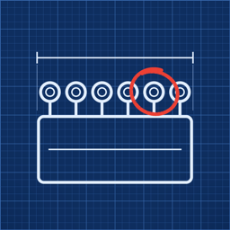

The Garage: Pit to Podium
Fix it on the bench. Race it.
Hold worn race-car parts against the blueprint from when they were new, find what's different, and fix them by hand. The parts you restore go on your own car and race through the season. Free, with no ads or purchases.
Questions and bug reports: ydaniel0826@ds.seoultech.ac.kr
FAQ
- Where is my progress saved?
- Only on your device. It saves when you go to the home screen or tap 'Menu' then 'To title'. There are three save slots.
- How do I start over?
- Tap 'Menu', then 'To title', then 'New game', and pick a slot. Pick a different slot to keep your current progress.
- Finding faults on the blueprint is too hard.
- Set 'Menu' then 'Difficulty' to 'Easy' to have fewer places to find.
- My phone gets hot.
- Set 'Menu' then 'Materials' to 'Light' to ease the graphics load.
- How do I change the language?
- 'Menu' then 'Language' switches between Korean and English.
지원 · The Garage: 피트에서 포디움까지
의뢰인이 맡긴 낡은 레이스카 부품을 새것일 때의 도면과 맞대어 다른 곳을 찾고, 손으로 고쳐 되살리는 게임입니다. 고친 부품은 우리 차에 달고 시즌 레이스를 달립니다. 무료이며 광고와 결제가 없습니다.
문의·버그 제보: ydaniel0826@ds.seoultech.ac.kr
자주 묻는 것
- 진행은 어디에 저장되나요?
- 기기 안에만 저장됩니다. 홈 화면으로 나가거나 '메뉴' → '타이틀로'를 누르면 저장됩니다. 슬롯은 셋입니다.
- 처음부터 다시 하고 싶어요.
- '메뉴' → '타이틀로' → '새 게임'을 누르고 슬롯을 고릅니다. 다른 슬롯을 고르면 지금 진행은 그대로 남습니다.
- 도면에서 고장 찾기가 너무 어려워요.
- '메뉴' → '난이도'에서 '쉬움'으로 바꾸면 찾을 곳이 줄어듭니다.
- 폰이 뜨거워져요.
- '메뉴' → '재질'을 '가볍게'로 바꾸면 그래픽 부담이 줄어듭니다.
- 언어를 바꾸고 싶어요.
- '메뉴' → '언어'에서 한국어와 영어를 바꿉니다.